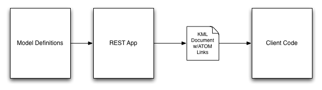

Madrona is based on the idea of a Spatial Content Management System. In a spatial CMS, the goal is to allow the developer to focus entirely on building models of the Features they want to include in their tool.
The Feature models should drive the entire process; Features are registered and most of the apps functionality is determined on the fly, eliminating the need to write boilerplate code. Specifically, Feature models drive:

- Django urls, views and forms
- A fully-featured REST API
- KML representations of Features
- Client-side javascript libraries (client automatically adapts to models)
This allows you to focus on the actual problem your project is trying to solve (rather than technical minutia) and keeps your application modular and flexible.